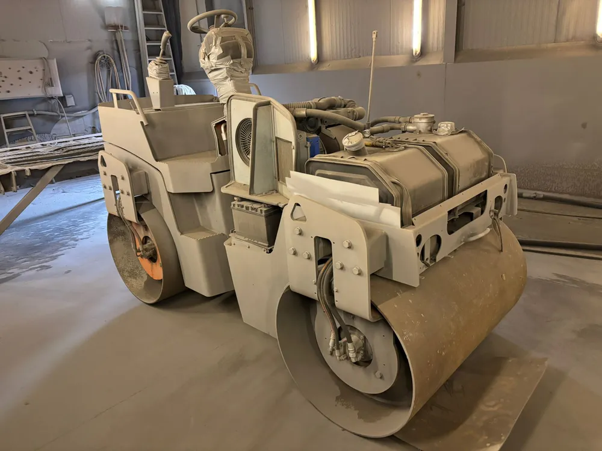
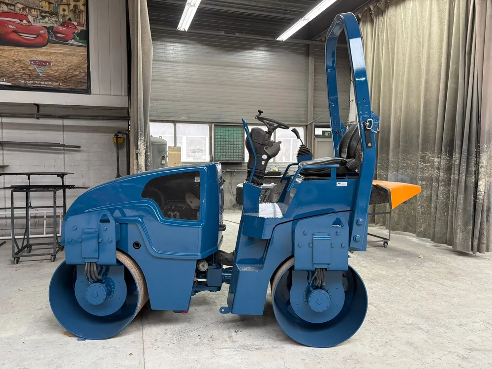
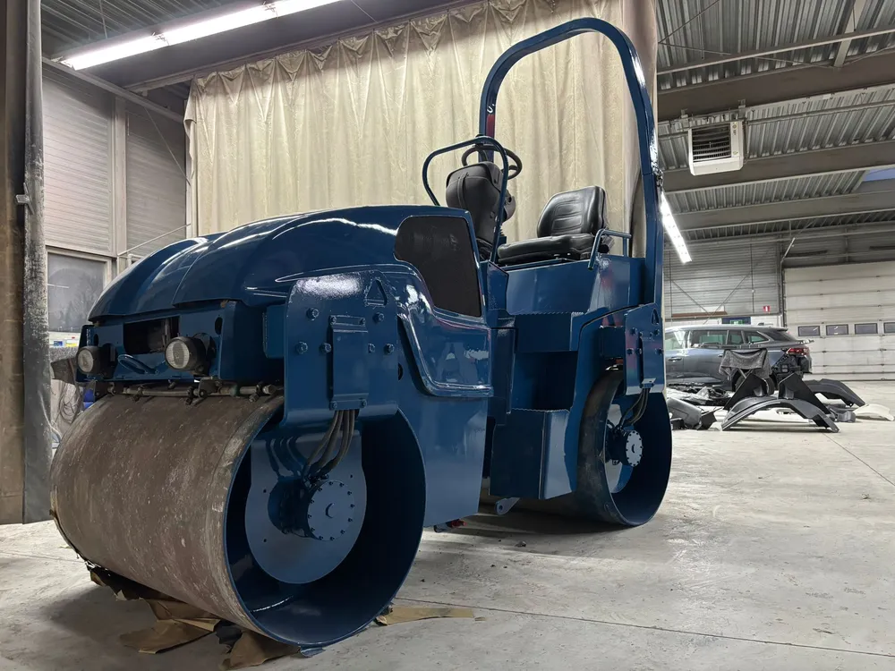
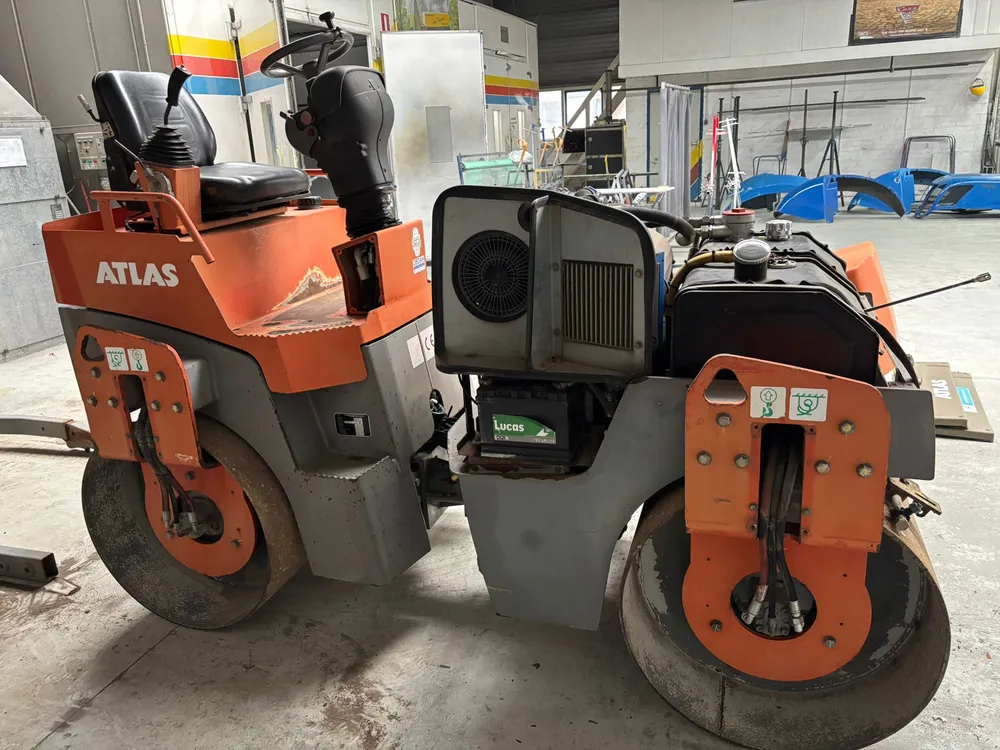

Schadeherstel
Van kleine schade tot compleet herstel, voor personenauto's, bedrijfswagens en vrachtwagens. Uitdeuken, plaatwerk en lakherstel: strak opgeleverd, zo goed als nieuw.

Autospuitbedrijf Kuperus · Heerenveen · sinds 1985
Van vrachtwagen, trailer en bedrijfswagen tot personenauto, machine en boot. Wij denken praktisch met u mee, houden de lijnen kort en leveren net werk.
Vrachtwagens, trailers, bedrijfswagens, auto's, machines en boten. Klein herstelwerk of groot project.
Stralen, voorbewerken, spuiten en afwerken onder één dak. Dat werkt sneller en geeft grip op kwaliteit.
Even overleggen? U belt of appt gewoon foto's van het werk. Snel antwoord, duidelijke afspraken.
Ruim veertig jaar vakmanschap in Heerenveen, met een sterke naam in het noorden van Nederland.
Wat wij doen
Kuperus is de praktische partner voor bedrijven en particulieren die spuitwerk, schadeherstel of straalwerk willen uitbesteden aan een vakkundige partij.
Van kleine schade tot compleet herstel, voor personenauto's, bedrijfswagens en vrachtwagens. Uitdeuken, plaatwerk en lakherstel: strak opgeleverd, zo goed als nieuw.
Compleet overspuiten, deelspuitwerk of huisstijlkleuren op nieuwe wagens. Ook interieurs, meubels en keukens spuiten wij in elke gewenste kleur.
Onze ruime straalcabine biedt plaats aan de grootste projecten. Stralen, ontroesten en een conserveringssysteem in de juiste laagdiktes: de basis voor een duurzaam resultaat.
Uw huisstijl op bedrijfswagens, vrachtwagens, trailers en opleggers. Ook reclameborden verzorgen wij, van ontwerp tot montage.
Specialistisch spuitwerk en airbrush voor wie net iets meer wil. Vakwerk met oog voor detail.
Voertuigen en materieel netjes maken voor verkoop of aflevering. Dealers, handelaren en transporteurs weten ons hiervoor te vinden.
Voor wie
Vrachtwagens, cabines, bakwagens, laadkleppen, trailers en opleggers. Schadeherstel, huisstijl spuiten en opfrissen van oudgedienden.
Autobedrijven, dealers en handelaren: schadeherstel, deelspuitwerk en verkoopklaar maken vóór aflevering.
Landbouwmachines, werktuigen, machineframes, containers en constructiedelen. Stralen en conserveren voor jarenlange bescherming.
Onderwaterschepen stralen en voorbereiden voor coating of complete afwerking.
Schadeherstel, klassiekers, meubels of dat ene restauratieproject. U bent net zo welkom als de grootste transporteur.
Ons werk
Een wals die bij ons binnenkwam voor een complete behandeling: gestraald, voorbewerkt en gespoten in de kleur van de klant.




Binnenkort tonen we hier meer projecten: vrachtwagens, bedrijfswagens, straalwerk en schadeherstel.

Over ons
Autospuitbedrijf Kuperus is in 1985 opgericht door Anno Kuperus en heeft sindsdien een sterke naam opgebouwd in het noorden van Nederland. Sinds 2026 bouwt een nieuwe generatie eigenaren samen met het vertrouwde team verder aan de toekomst.
Wij werken met korte lijnen, vaste gezichten en oog voor kwaliteit. Onze klanten weten wat ze aan ons hebben: betrouwbaar werk, duidelijke afspraken en een goed eindresultaat.
Contact
Bel gerust, of stuur foto's van het werk via WhatsApp. Dan denken wij praktisch met u mee en ontvangt u snel een duidelijke offerte.